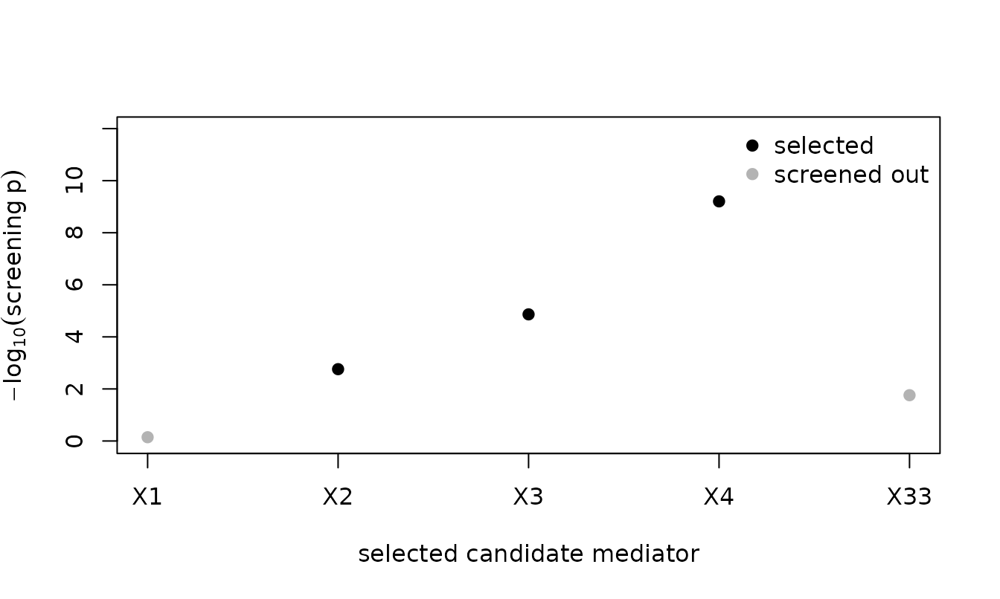

Power Enhancement for High-Dimensional Mediation: A Guided Tour
Source:vignettes/POEMED.Rmd
POEMED.RmdThis vignette is written for a reader who is comfortable with regression but new to high-dimensional mediation. It explains the problem the package solves, builds up the idea behind the power-enhanced tests, then walks through a first analysis, the output, the different outcome types, a simulation study, and finally the real-data application from the article that introduced the tests, Yu and Kelley (in press). You do not need to have read the article first; pointers to it appear where the details live.
1. What Is a Mediation Analysis?
A mediation analysis asks how an exposure affects an
outcome. Instead of only asking whether a treatment X
changes an outcome Y, it asks whether X works
through an intermediate variable M, the
mediator. The classic picture is a chain:
a b
X -----> M -----> Y
\ /
\________ c' _________/
(direct)The effect of X on Y that travels through
M is the indirect effect: in a linear
model it is the product a * b of the X -> M
path and the M -> Y path. The part of X’s
effect that does not go through M is the direct
effect c'. Their sum is the total
effect.
In modern applications there is rarely a single mediator. Genomics
studies screen thousands of methylation sites; the application later in
this vignette has 57 health-expenditure indicators. When there are many
candidate mediators M = (M_1, ..., M_p), the natural first
question is simply:
Is there any active mediator at all? That is, does
XaffectYthrough any of the candidate mediators?
This is a single global hypothesis test, and it is what POEMED is built to perform with high power.
2. The Problem: Total-Indirect-Effect Tests Have a Blind Spot
With many mediators, the conventional approach summarizes them by the
total indirect effect, written beta: the
sum over all mediators of each one’s individual indirect effect. The
global test then checks whether beta = 0.
This works well when the mediators all push the outcome the same way.
But consider two active mediators whose individual indirect effects are
equal in size and opposite in sign: say
+0.5 through M_1 and -0.5 through
M_2. Both mediators are genuinely active, yet their
contributions cancel, so the total indirect effect is
beta = (+0.5) + (-0.5) = 0.A test built on beta sees zero and concludes “no
mediation,” even though two mediators are plainly active. This is not a
rare edge case: whenever different pathways move an outcome in opposite
directions (heterogeneous mediation, and in the extreme
contrasting mediation), the total indirect effect
understates the truth and the test loses power. The article calls this
out as the core limitation of existing high-dimensional mediation
tests.
3. The Idea: A Power Enhancement Component
The power-enhanced (PE) test fixes the blind spot by adding a second
piece that cannot cancel. After a penalized fit narrows the candidates
to a small set of mediators, the PE component J_m adds up,
over those mediators, the magnitude of each one’s
combined path signal. In code notation, with alpha_hat[j]
the estimated M -> Y coefficient of mediator
j, Gamma_hat[i, j] the estimated
X -> M coefficient from exposure i,
se_* their standard errors, and p_alpha[j] and
p_Gamma[i, j] the two paths’ p-values:
J_m = sqrt(p) * sum over exposures i and selected mediators j of
|alpha_hat[j] / se_alpha[j]| * |Gamma_hat[i, j] / se_Gamma[i, j]|
* 1{max(p_alpha[j], p_Gamma[i, j])
<= error_level / (s * q * log(log(n)))}Here s is the number of mediators the penalized fit
selected, q the number of exposures, and n the
sample size. This is the default Bonferroni screen; the
"BH" and "BY" methods of Section 6 compare
adjusted p-values with error_level / log(log(n))
instead.
Two things matter here. First, the indicator keeps a mediator only
when both its X -> M path and its
M -> Y path pass that strict, multiplicity-adjusted
threshold, so noise mediators do not contribute. The threshold is set by
error_level (default 0.05), the error rate targeted for the
identified mediators, so it shapes the global test as well (Section 6
shows how). Second, because J_m sums absolute
values, a +0.5 mediator and a -0.5
mediator reinforce each other instead of canceling.
The full test statistic is M_PE = S_n + J_m, the
benchmark Wald statistic S_n (the total-indirect-effect
test) plus the enhancement. Under the global null of no mediation, the
screen keeps no mediator with probability tending to one as
n grows, so J_m = 0 and M_PE has
the same chi-square reference distribution as S_n
asymptotically. In a finite sample J_m is occasionally
positive under the null, and because M_PE is never smaller
than S_n, the PE test then rejects a little more often than
the benchmark (the simulation in Section 8 shows this). Under
heterogeneous alternatives, J_m grows large and the test
gains power. That is the whole idea: keep the size in large
samples, and add power where the old test is blind.
The same indicator that builds J_m also tells you
which mediators are active, targeting the familywise error rate
(the default) or the false discovery rate. The tuning grid of the
penalized fit shapes both the global test and the selected set; Sections
4, 8, and 11 say how to read it and how to tune it.
4. A First Analysis, Step by Step
The package can simulate data so you can see the method work before
bringing your own. simulate_mediation_data() generates the
patterns studied in the article. Here is a contrasting
setting: a few active mediators whose effects cancel to a zero total
indirect effect.
set.seed(113)
d <- simulate_mediation_data(n = 200, p = 60, outcome = "continuous",
pattern = "contrasting", c1 = 1)The result is a list. The four pieces an analysis needs are the exposure, outcome, mediators, and (optionally) confounders:
dim(d$X) # exposure: 200 observations, 1 column
#> [1] 200 1
length(d$Y) # outcome: 200 values
#> [1] 200
dim(d$M) # mediators: 200 x 60
#> [1] 200 60
d$active_mediators # which mediators are truly active (the ground truth)
#> [1] 1 2 3 4
d$beta # the total indirect effect: zero, by construction
#> [1] -6.661338e-18So four mediators are genuinely active, but the total indirect effect is zero because their effects cancel. This is precisely the situation that defeats a total-indirect-effect test. Now run the global test:
fit <- pe_mediation(d$X, d$Y, d$M, outcome = "continuous")
#> Warning: HBIC selected lambda = 0.05, the smallest value of `lambda_grid`, for
#> the full model and the reduced model of the benchmark test. The criterion is
#> minimized over the grid alone, so its minimum may lie beyond that end or
#> between the end and its neighbor. Consider extending the grid past it and using
#> a finer partition (more values), and compare the selected mediators and
#> p-values across grids.
fit
#> term value
#> stat_hdmm 1.302
#> pval_hdmm 0.2538
#> stat_pe 865.5
#> j_pe 864.2
#> pval_pe < 0.0001
#> total_indirect_effect -0.08396
#> n_selected_mediators 3
#> df 1
#> n_candidate_mediators 60
#> n_observations 200
#>
#> Outcome model: continuous (linear)
#> Selected mediators (3): 2, 3, 4
#> Tuning parameter (HBIC): lambda = 0.05 from 100 values in [0.05, 10] (the grid's lower end)Read the two p-values. pval_hdmm is the benchmark Wald
test on the total indirect effect; it is large, so that test fails to
detect any mediation (exactly the blind spot from Section 2).
pval_pe is the power-enhanced test; it is essentially zero,
so it detects the mediation decisively. The footer lists the mediators
the screen selected, here three of the four truly active mediators. The
power enhancement, made concrete.
The last footer line reports the tuning parameter lambda
that the high-dimensional BIC (HBIC) chose for the penalized fit and the
grid it searched: by default 100 values from 0.05 to 10, the same grid
for every outcome type. HBIC is minimized over the grid alone, so
whatever grid is offered, the value chosen is the best of the values
offered. Here the smallest value won. The footer says so, and the fit
warned, because a minimum at an end of the grid may lie beyond that end
or between it and its neighbor; a grid that extends further, or is
spaced more finely, is worth a look whenever that happens. Doing that
here moves the chosen value inside the grid and leaves the selected
mediators unchanged:
finer <- pe_mediation(d$X, d$Y, d$M, outcome = "continuous",
lambda_grid = seq(0.01, 10, length.out = 200))
attr(finer, "tuning")$lambda_selected
#> [1] 0.06020101
attr(finer, "selected_mediators")
#> [1] 2 3 4The grid can be tuned the other way as well: fewer values, or a range narrowed to where the HBIC minimum has been seen to fall, make each fit faster, which matters when many fits are run (Section 8 does this for a simulation study). The chunks below fit on the default grid, and each would repeat the warning above; it is not shown again.
5. Reading the Result Table
Every POEMED test returns a tidy table that prints with sensible rounding (whole numbers without decimals, p-values to four places) while storing full precision underneath. The rows are:
| term | meaning |
|---|---|
stat_hdmm, pval_hdmm
|
the benchmark Wald statistic S_n and its p-value (the
total-indirect-effect test of Guo et al.) |
stat_pe, pval_pe
|
the power-enhanced statistic M_PE and its p-value |
j_pe |
the power enhancement component J_m (the amount added
to S_n) |
total_indirect_effect |
the estimated total indirect effect beta
|
n_selected_mediators |
how many individual mediators the screen selected |
df |
degrees of freedom of the chi-square reference (the number of exposures) |
n_candidate_mediators, n_observations
|
p and n
|
The table gives a point estimate of beta but no
confidence interval, and the article reports none. In simulations, a
Wald interval built on the penalized estimate fell short of its nominal
coverage, most clearly for binary and count outcomes, so the package
does not report one.
To pull a number out, index the table like any data frame; the stored value keeps full precision even though the display rounds:
fit$value[fit$term == "pval_pe"] # the exact p-value
#> [1] 3.135368e-190
attr(fit, "selected_mediators") # the selected mediator indices
#> [1] 2 3 46. Identifying Which Mediators Are Active
The selected set is controlled by the method argument.
The default, "Bonferroni", targets the familywise error
rate and is the most conservative of the three, so it may miss weak
mediators. Its control of that rate is asymptotic: in finite samples the
rate also depends on the design and on the tuning grid, since a grid
that reaches small values of lambda lets more candidates
into the penalized fit. The "BH" and "BY"
options control the false discovery rate instead and typically recover
more mediators.
des_idx <- function(f) attr(f, "selected_mediators")
des_idx(pe_mediation(d$X, d$Y, d$M, outcome = "continuous", method = "Bonferroni"))
#> [1] 2 3 4
des_idx(pe_mediation(d$X, d$Y, d$M, outcome = "continuous", method = "BH"))
#> [1] 2 3 4 33The target error rate is error_level (default 0.05): the
familywise error rate under "Bonferroni", the false
discovery rate under "BH" and "BY". It is
distinct from the significance level you use to read
pval_pe, but the global test depends on it as well, because
it sets the screening threshold inside J_m (Section 3). A
stricter value can therefore remove the enhancement on a given data
set:
strict <- pe_mediation(d$X, d$Y, d$M, outcome = "continuous",
error_level = 0.005)
strict[strict$term %in% c("pval_hdmm", "j_pe", "pval_pe"), ]
#> term value
#> pval_hdmm 0.2538
#> j_pe 616.5
#> pval_pe < 0.0001
#>
#> Outcome model: continuous (linear)
#> Selected mediators (2): 3, 4
#> Tuning parameter (HBIC): lambda = 0.05 from 100 values in [0.05, 10] (the grid's lower end)On these data a Bonferroni threshold built from
error_level = 0.005 keeps no mediator, so J_m
is zero and pval_pe equals the benchmark’s
pval_hdmm, where the default 0.05 gave a p-value of
essentially zero.
7. Binary and Count Outcomes
The same construction works for non-continuous outcomes through a link function. Name the outcome type and the front end dispatches to the logistic (binary) or Poisson (count) model. The total indirect effect is then on the link scale (log-odds for binary, log-mean for count).
set.seed(113)
db <- simulate_mediation_data(n = 250, p = 50, outcome = "binary",
pattern = "contrasting", c1 = 1, c2 = 1)
pe_mediation(db$X, db$Y, db$M, outcome = "binary")
#> term value
#> stat_hdmm 0.009973
#> pval_hdmm 0.9205
#> stat_pe 172.5
#> j_pe 172.5
#> pval_pe < 0.0001
#> total_indirect_effect -0.01329
#> n_selected_mediators 1
#> df 1
#> n_candidate_mediators 50
#> n_observations 250
#>
#> Outcome model: binary (logistic)
#> Selected mediators (1): 2
#> Tuning parameter (HBIC): lambda = 0.05 from 100 values in [0.05, 10] (the grid's lower end)The tuning grid is the same for every outcome type, 100 values from 0.05 to 10, and is tuned the same way (Section 4).
8. A Simulation Study: Size and Power
pe_power_curve() runs Monte Carlo studies of the kind
the article reports. It sweeps the signal strength c1,
simulating many data sets at each value and recording how often each
test rejects. At c1 = 0 (no mediation) the rejection rate
estimates the Type I error rate; at nonzero c1 it estimates
power. A rate from n_rep replications carries a Monte Carlo
standard error of about sqrt(r * (1 - r) / n_rep), so the
40-replication run below knows a rate near 0.05 to within about 0.03 and
a rate near 0.5 to within about 0.08.
A simulation study is also where the tuning grid is worth tuning to the situation. Each replication searches the whole grid, so the default grid of 100 values costs about five times the fitting of a 20-value grid. The study below passes a shorter grid, 20 values from 0.05 to 2: the fit of Section 4 put the HBIC minimum at the bottom of the default grid, so the shorter grid keeps that end and drops the range above 2, which no fit at this design reaches. Whatever the grid, each fit keeps the best value the grid offers, and the warning a single fit gives when its choice sits at an end of the grid is not raised inside a study, which searches a fixed grid by design. (On these 120 simulated data sets the default grid gives the same six rejection rates; it only takes five times as long.)
set.seed(113)
pc <- pe_power_curve(n = 150, p = 50, outcome = "continuous",
pattern = "contrasting", c1_grid = c(0, 0.5, 1),
n_rep = 40, lambda_grid = seq(0.05, 2, length.out = 20))
pc
#> c1 rejection_hdmm rejection_pe n_valid n_empty
#> 0 0.075 0.1 40 0
#> 0.5 0.05 0.3 40 0
#> 1 0.05 0.975 40 0
#>
#> Outcome: continuous
plot(pc, main = "Contrasting Mediation: PE vs. Benchmark")At c1 = 0 the benchmark rejects in 7.5 percent of
replications and the power-enhanced test in 10 percent, both near the
nominal 5 percent given the Monte Carlo error of 40 replications. The PE
rate can never fall below the benchmark’s on the same data sets, because
M_PE is never smaller than S_n. It is higher
whenever a null replication has a positive J_m that carries
M_PE past the critical value where S_n alone
falls short (Section 3). As the contrasting signal grows the benchmark
rejects in 5 percent of replications at c1 = 1 and the
power-enhanced test in 97.5 percent. That is the enhancement at work.
The article’s own study, at n = 300, p = 500,
and 1,000 replications per point, is the converged version of this
picture; the reproduction vignette gives the calls, with the grids of
the article’s scripts.
9. The Real Application: Health Spending as a Mediator
The package ships the article’s empirical data,
WHO_health_mediation: a panel of 91 WHO member states over
2000–2021. The exposure is annual growth in GDP per capita, the
candidate mediators are 57 health-expenditure indicators from the WHO
Global Health Expenditure Database, and there are five health outcomes
(infant and under-five mortality, life expectancy, low birthweight, and
undernourishment). The substantive question: does health
spending mediate the relationship between economic growth and population
health?
data(WHO_health_mediation)
dim(WHO_health_mediation)
#> [1] 2002 68
WHO_health_mediation[1:3, c("country", "region", "income", "year",
"gdp_growth", "imr", "gge_gdp")]
#> country region income year gdp_growth imr gge_gdp
#> 1 Argentina AMR Upper-middle 2000 -1.906987 17.3 25.2
#> 2 Argentina AMR Upper-middle 2001 -5.453797 16.8 26.4
#> 3 Argentina AMR Upper-middle 2002 -11.845950 16.4 21.9The 57 mediators are strongly intercorrelated (many are different
normalizations of the same spending), which is exactly the
high-dimensional, correlated-mediator regime the method targets. Their
definitions are in WHO_indicator_codebook:
head(WHO_indicator_codebook, 4)
#> indicator
#> 1 che_gdp
#> 2 che_pc_usd
#> 3 che
#> 4 gghed
#> description
#> 1 Current Health Expenditure (CHE) as % of Gross Domestic Product (GDP)
#> 2 Current Health Expenditure (CHE) per capita in US$
#> 3 Current Health Expenditure (CHE)
#> 4 Domestic General Government Health Expenditure (GGHE-D)Building One Analysis Design
WHO_mediation_design() assembles the exposure, outcome,
mediator, and confounder matrices for a chosen outcome, handling the
missing-data coverage and the confounders (region, income group, and
year) for you. The call below follows the preprocessing of the authors’
analysis code behind the article’s tables: it standardizes the exposure
and the mediators, centers the outcome, and leaves the confounders (the
region and income indicators and the year) unscaled, then passes
scale = FALSE so that pe_mediation() fits the
matrices as given. Its tuning grid,
seq(0.1, 2, length.out = 100), is the grid behind the
article’s real-data tables and the default of
WHO_mediation_analysis() for the global and every subgroup
model. In this global model HBIC picks 0.1, the smallest value of that
grid, as it does in about half of the article’s cells; the article’s
analysis keeps its grid as it is, and so does this vignette, so the
warning a single fit gives at an end of its grid is not shown in this
section. The article’s text says that covariates are standardized before
fitting, but its global finding for infant mortality is recovered with
the confounders left unscaled. The last part of this section shows what
standardizing them as well changes.
des <- WHO_mediation_design("imr") # infant mortality rate
c(observations = des$n, mediators = ncol(des$M), confounders = ncol(des$Z))
#> observations mediators confounders
#> 2002 57 9
fit <- pe_mediation(scale(des$X), des$Y - mean(des$Y), scale(des$M),
Z = des$Z, outcome = "continuous", scale = FALSE,
lambda_grid = seq(0.1, 2, length.out = 100))
selected <- des$indicators[attr(fit, "selected_mediators")]
WHO_indicator_codebook$description[
match(selected, WHO_indicator_codebook$indicator)]
#> [1] "General Government Expenditure (GGE) as % of GDP"The PE test identifies general government expenditure as a share of
GDP (gge_gdp) as the mediator through which economic growth
reaches infant mortality. Yu and Kelley (in press) report the same
single indicator for the global model in their Table 1.
The Full Subgroup Analysis
WHO_mediation_analysis() runs the whole set of models
the article reports for one outcome (global, then within each WHO
region, income group, and region-income cell), prepares the data the
same way as the fit above, and returns one row per group, laid out like
the article’s Table 1 (infant mortality) and Table 2 (undernourishment).
Here it fits the global model and the six regions on its default tuning
grid.
res <- WHO_mediation_analysis("imr", groupings = c("global", "region"))
res[, c("group", "n_countries", "pval_hdmm", "pval_pe", "selected_mediators")]
#> group n_countries pval_hdmm pval_pe selected_mediators
#> ALL 91 0.0644 < 0.0001 gge_gdp
#> AFR 32 0.4434 0.4434 none
#> AMR 28 0.4972 0.4972 none
#> EMR 8 0.0261 0.0261 none
#> EUR 9 < 0.0001 < 0.0001 none
#> SEAR 5 0.6483 < 0.0001 ext_usd2021_pc
#> WPR 9 0.8681 < 0.0001 chi_che
#>
#> Outcome: imrCompare the benchmark and PE columns. Where the benchmark test sees
nothing (a large pval_hdmm) while the PE test rejects
decisively and names the indicators responsible, heterogeneous mediation
is hiding the signal from the conventional test. In the Western Pacific
region, for example, the benchmark p-value is 0.87, yet the PE test
rejects and flags compulsory health insurance as a share of current
health expenditure (chi_che). Table 1 of Yu and Kelley (in
press) shows the same contrast for this region.
summary() reads that comparison off the table for you,
counting the groups where the PE test detects mediation the benchmark
misses:
summary(res)
#> POEMED comparison: IMR
#> groups: 7 (7 with data), alpha_level = 0.05
#> detected by benchmark (HDMM): 2 by power-enhanced (PE): 5
#> PE detects mediation in 3 groups the benchmark misses:
#> group n_countries pval_hdmm pval_pe selected_mediators
#> ALL 91 0.0644 < 0.0001 gge_gdp
#> SEAR 5 0.6483 < 0.0001 ext_usd2021_pc
#> WPR 9 0.8681 < 0.0001 chi_che
#> most-flagged mediators:
#> chi_che 1
#> ext_usd2021_pc 1
#> gge_gdp 1Why the Preprocessing Matters
Passing the raw design to pe_mediation() with the
default scale = TRUE standardizes the confounders as well,
and that is a different model. On the same tuning grid as the first
fit:
raw <- pe_mediation(des$X, des$Y, des$M, Z = des$Z, outcome = "continuous",
lambda_grid = seq(0.1, 2, length.out = 100))
c(confounders_unscaled = fit$value[fit$term == "pval_hdmm"],
all_standardized = raw$value[raw$term == "pval_hdmm"])
#> confounders_unscaled all_standardized
#> 0.06437544 0.19852883
des$indicators[attr(raw, "selected_mediators")]
#> [1] "shi_che" "gge_gdp"The benchmark Wald p-value moves from about 0.064 to about 0.2, and
the screen selects a second indicator, social health insurance
(shi_che). Leave the confounders unscaled (or call
WHO_mediation_analysis(), which does) whenever the goal is
to compare results with the article’s tables.
10. Beyond the Global Test: The Toolkit
The global test is the core, but POEMED ships a few conveniences around it.
A Formula Interface for Data Frames
If your variables live in a data frame, pe_mediate()
takes a formula for the outcome and exposure, the names of the mediator
columns, and (optionally) confounder names, and calls
pe_mediation() for you.
set.seed(113)
d <- simulate_mediation_data(n = 200, p = 60, outcome = "continuous",
pattern = "contrasting", c1 = 1)
df <- data.frame(y = d$Y, x = d$X[, 1], d$M)
meds <- grep("^X", names(df), value = TRUE) # the mediator columns
fit <- pe_mediate(y ~ x, data = df, mediators = meds, outcome = "continuous")Why Each Mediator? The Per-Mediator Table
pe_mediators() opens up the screening step: for every
candidate mediator the penalized fit kept, it shows the two path
statistics, the screening p-value (the larger of the two path p-values),
and whether the screen selected the mediator (the selected
column). This is how you see why the test reached its
conclusion.
pe_mediators(fit)
#> mediator name t_outcome t_exposure screen_p selected
#> 1 X1 21.75 0.3641 0.7158 FALSE
#> 2 X2 -10.21 3.131 0.0017 TRUE
#> 3 X3 8.602 4.349 < 0.0001 TRUE
#> 4 X4 -6.82 6.185 < 0.0001 TRUE
#> 33 X33 -2.378 -13.08 0.0174 FALSEplot() shows the same evidence graphically, the
screening strength of each candidate the penalized fit kept, with the
mediators the screen selected highlighted and the rest marked as
screened out.
plot(fit)
Working With broom
tidy() returns the per-mediator table and
glance() a one-row summary, so a POEMED result drops into
broom and tidyverse workflows.
glance(fit)
#> stat_hdmm pval_hdmm stat_pe pval_pe total_indirect_effect
#> 1 1.302293 0.2537948 865.4797 3.135368e-190 -0.08395881
#> n_selected_mediators n_observations
#> 1 3 200All Three Multiplicity Methods at Once
Pass report_all_methods = TRUE and
pe_selection() reports the selected set under Bonferroni
(familywise error rate), Benjamini-Hochberg, and Benjamini-Yekutieli
(false discovery rate) side by side, as the supplement of the article
does.
fit_all <- pe_mediation(d$X, d$Y, d$M, outcome = "continuous",
report_all_methods = TRUE)
pe_selection(fit_all)
#> method n_selected j_pe stat_pe pval_pe selected_mediators
#> Bonferroni 3 864.2 865.5 < 0.0001 2, 3, 4
#> BH 4 1105 1106 < 0.0001 2, 3, 4, 33
#> BY 3 864.2 865.5 < 0.0001 2, 3, 4Planning the Sample Size
ss_power_pe_mediation() plans a study: over a grid of
candidate sample sizes it estimates the power of the PE test by
simulation and stores the smallest sample size that reaches the target
power in the "recommended_n" attribute. That attribute is
NA when no size in the grid reaches the target, so choose a
grid that brackets it. Under the default tuning grid this contrasting
design reaches a power of 0.8 between 100 and 150 observations, so the
grid below brackets that. It runs a Monte Carlo study (400 fits on the
default grid, about a minute and a half), so it is shown here but not
evaluated; a shorter tuning grid, passed as lambda_grid,
would cut that time.
plan <- ss_power_pe_mediation(outcome = "continuous", pattern = "contrasting",
p = 50, n_grid = c(100, 150, 200, 250),
target_power = 0.8, n_rep = 100, seed = 113)
plan
attr(plan, "recommended_n")Run as shown, it estimates the power of the power-enhanced test at
0.77, 0.92, 1.00, and 1.00 for the four sizes and recommends
n = 150. Each power estimate from 100 replications carries
a Monte Carlo standard error of about 0.04 near a power of 0.8, so a
size whose estimate sits just above the target could give way to the
next size under another seed; raise n_rep for a plan you
will report.
11. Bringing Your Own Data
To analyze your own study, arrange:
-
X: ann-by-qmatrix of exposures (often one column). -
Y: a length-noutcome (continuous, 0/1, or counts). -
M: ann-by-pmatrix of candidate mediators (pmay exceedn). -
Z(optional): ann-by-dmatrix of confounders.
then call pe_mediation(X, Y, M, Z, outcome = ...). The
defaults standardize the inputs as the method assumes, choose the tuning
parameter by a high-dimensional information criterion over a grid of 100
values from 0.05 to 10 for every outcome type, and target the familywise
error rate when selecting individual mediators. The grid can be tuned:
shortened or narrowed to save time, widened or refined when the value
chosen sits at an end of the grid, which the fit warns about and the
footer notes (Section 4). Everything returned is an ordinary data frame
you can index, save, or plot, and the print footer reports the tuning
parameter chosen and the grid it came from.
When POEMED Is the Right Tool, and When It Is Not
The tests assume a linear (or generalized linear) outcome model with
a sparse set of active mediators, standardized inputs, and complete
data. The section “When to Use POEMED” of ?pe_mediation
states the practical limits seen on simulated data, with the design
behind each. In brief:
- Sample size. The penalized selection needs
nlarge relative tolog(p)and to the signal. Withn = 100andp = 2000under the contrasting pattern (continuous outcome,c1 = 1, default grid, seeds 1 to 10), the selection kept at most one mediator: one in 4 of the 10 samples and none in the other 6. The power-enhanced test could then draw on that one mediator only, not on the contrasting structure; it rejected in 4 of the 10 samples, and the benchmark in 2. - Strongly correlated mediators. Correlation among the mediators
weakens both the selection and the screen. Under the contrasting pattern
(continuous outcome,
n = 200,p = 60,c1 = 1, default grid, seeds 1 to 10), the screen selected at least one mediator in 6 of 10 samples with an autoregressive correlation of 0.9 among neighboring mediators, against 10 of 10 at 0.5, and the selected set varied from sample to sample (one sample named a null mediator beside an active one at both correlations). - Selected mediators in finite samples. The screen’s control of its
error rate is asymptotic. Under the contrasting pattern with a strong
signal (continuous outcome,
c1 = 1, default grid, Bonferroni screen,error_level = 0.05), the selected set held an inactive mediator in 0.14 of 400 samples atn = 150,p = 60and in 0.11 of 200 samples atn = 300,p = 500; the rate was 0.05 under the homogeneous pattern at the smaller design and 0.00 with no signal. It depends on the tuning grid: 20 values from 0.2 to 0.39 gave 0.00 in the same runs, with lower recall (0.13 against 0.48, and 0.25 against 0.47). - Rare binary outcomes. With about 2 to 3 percent events at
n = 300the penalized logistic fit selects nothing at any grid value; the fit is empty and the function says so. - Overdispersed counts. The count model is Poisson. In null
simulations with negative binomial counts (size parameter 1) at
n = 200andp = 100, 300 replications on a grid of 20 values from 0.05 to 1, its size was not inflated, but about a tenth of the fits were empty. - Missing values.
pe_mediation()stops on a missing value, so supply complete cases;pe_mediate()drops incomplete rows and says how many it dropped.
References
Yu, X., & Kelley, K. (in press). Power Enhancement in High-Dimensional Heterogeneous Mediation Analysis. Journal of the American Statistical Association.
Fan, J., Liao, Y., & Yao, J. (2015). Power enhancement in high-dimensional cross-sectional tests. Econometrica, 83(4), 1497–1541. https://doi.org/10.3982/ECTA12749
Guo, X., Li, R., Liu, J., & Zeng, M. (2022). High-dimensional mediation analysis for selecting DNA methylation loci mediating childhood trauma and cortisol stress reactivity. Journal of the American Statistical Association, 117(539), 1110–1121. https://doi.org/10.1080/01621459.2022.2053136
Session Information
sessionInfo()
#> R version 4.6.1 (2026-06-24)
#> Platform: x86_64-pc-linux-gnu
#> Running under: Ubuntu 24.04.5 LTS
#>
#> Matrix products: default
#> BLAS: /usr/lib/x86_64-linux-gnu/openblas-pthread/libblas.so.3
#> LAPACK: /usr/lib/x86_64-linux-gnu/openblas-pthread/libopenblasp-r0.3.26.so; LAPACK version 3.12.0
#>
#> locale:
#> [1] LC_CTYPE=C.UTF-8 LC_NUMERIC=C LC_TIME=C.UTF-8
#> [4] LC_COLLATE=C.UTF-8 LC_MONETARY=C.UTF-8 LC_MESSAGES=C.UTF-8
#> [7] LC_PAPER=C.UTF-8 LC_NAME=C LC_ADDRESS=C
#> [10] LC_TELEPHONE=C LC_MEASUREMENT=C.UTF-8 LC_IDENTIFICATION=C
#>
#> time zone: UTC
#> tzcode source: system (glibc)
#>
#> attached base packages:
#> [1] stats graphics grDevices utils datasets methods base
#>
#> other attached packages:
#> [1] POEMED_1.0.0
#>
#> loaded via a namespace (and not attached):
#> [1] cli_3.6.6 knitr_1.52 rlang_1.3.0 xfun_0.61
#> [5] otel_0.2.0 generics_0.1.4 textshaping_1.0.5 jsonlite_2.0.0
#> [9] htmltools_0.5.9 ragg_1.5.2 sass_0.4.10 glmnet_5.1
#> [13] rmarkdown_2.32 grid_4.6.1 evaluate_1.0.5 jquerylib_0.1.4
#> [17] fastmap_1.2.0 foreach_1.5.2 yaml_2.3.12 lifecycle_1.0.5
#> [21] compiler_4.6.1 codetools_0.2-20 fs_2.1.0 Rcpp_1.1.2
#> [25] lattice_0.22-9 systemfonts_1.3.2 digest_0.6.39 R6_2.6.1
#> [29] ncvreg_3.16.0 splines_4.6.1 shape_1.4.6.1 bslib_0.12.0
#> [33] Matrix_1.7-5 tools_4.6.1 iterators_1.0.14 survival_3.8-6
#> [37] pkgdown_2.2.1 cachem_1.1.0 desc_1.4.3